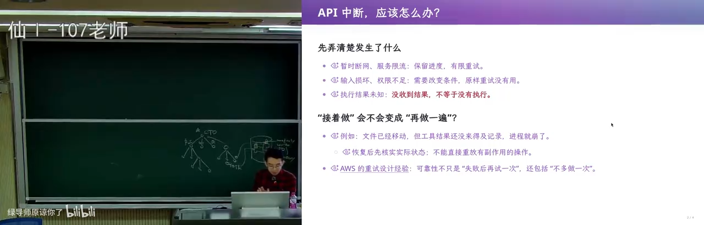
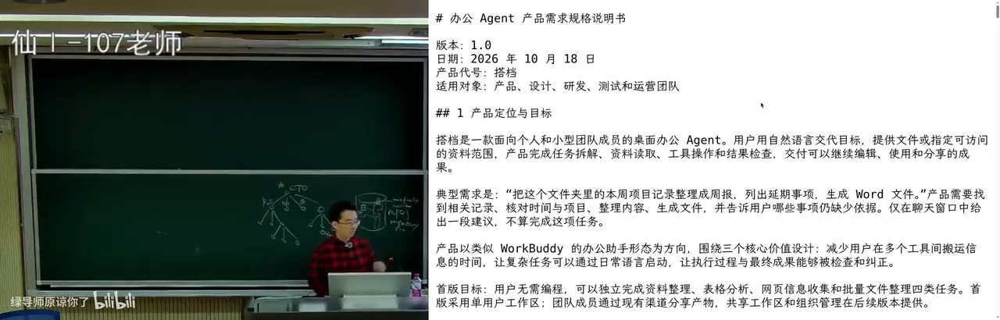
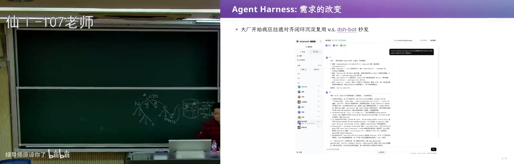
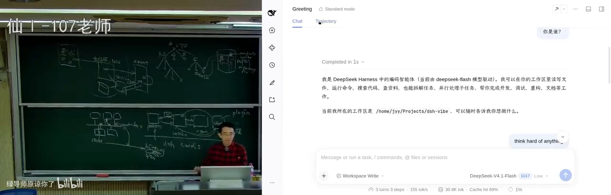
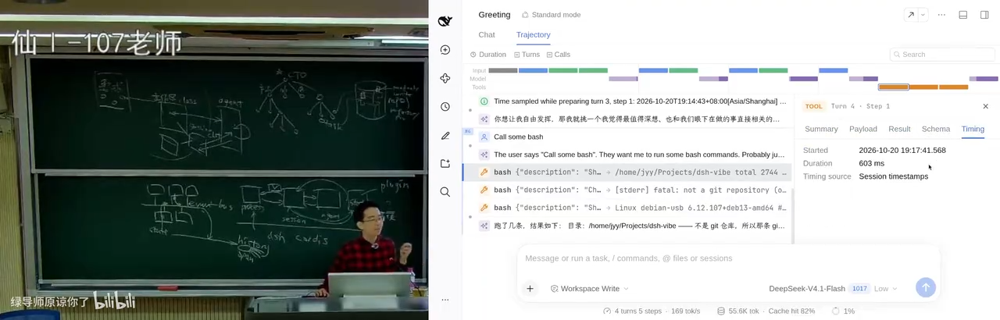
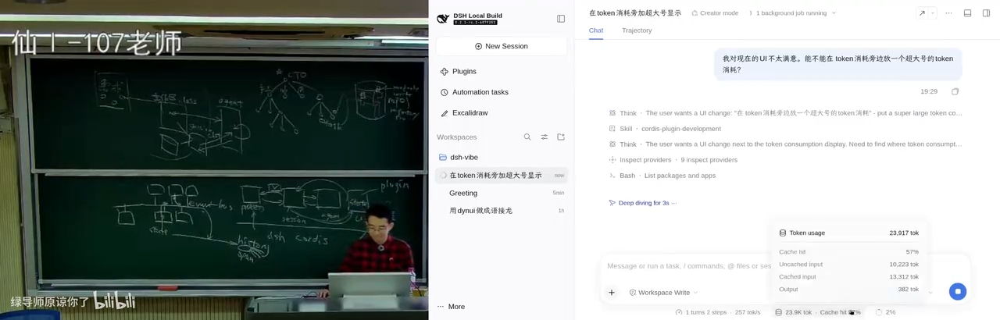
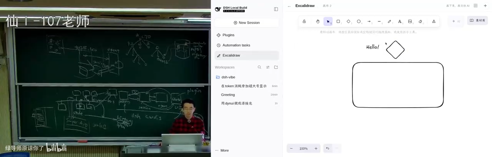
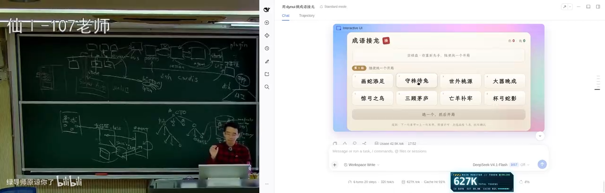
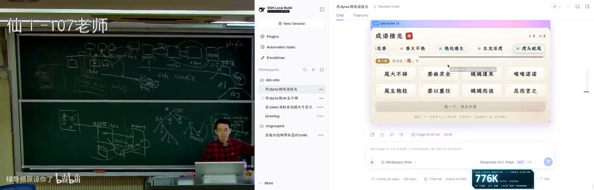
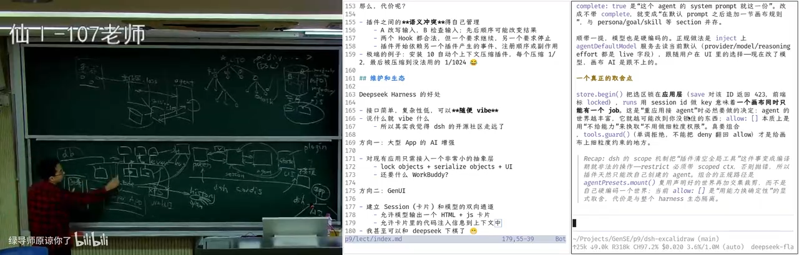

DeepSeek Harness（1）：从一个 150 行的 Agent，到"一切皆插件"的架构
课程官方资料：课程主页 · 项目：DeepSeek Harness（课堂上以它作为拆解对象）
说明：本讲的官方讲义（
lect9.md）与幻灯片（slides9.html）尚未在课程主页发布（截至录制时课程主页只列到第 8 讲），因此本书没有官方课件图，全部插图均来自视频帧。版权说明：课程内容与其后续发布的讲义、幻灯片版权归讲师 © 蒋炎岩 所有，依 CC BY-NC 4.0 发布；本书为非商业学习笔记。
本讲说明：前八讲把软件工程的概念重新过了一遍，这一讲开始落到一个具体产品上：如果真的从零构建一个 Agent-native 的软件开发环境，需求会怎么膨胀、架构会在"受限与自由"之间怎么取舍、设计怎样把"一切皆插件"变成可运行的机制、以及一个干净架构最终换来的是什么——一整个生态。讲者以 DeepSeek Harness 为主线，现场用 creator mode 许愿式地做了插件、给超级应用装上了 AI 原生能力，也顺手留下了不少关于需求变更、抽象泄漏与系统设计取舍的判断。
目录
1. 需求：当软件工程的概念每半年被重新发明一次
(参考时间: 00:00)
软件工程、项目、项目管理——这些概念讲者说他已经讲过一万遍，不再重复。但正因为它们如此基础，在今天的 Agent-native 时代，它们一直在被重新更新。
就在上周，Anthropic 说"git 已经不够用了"。讲者提醒大家：这不是意外——在这门课一开始讲版本管理时他就说过，我们确实会有一天遇到 git 不够用的情况。
原因很自然。上学的时候，你自己就是一个 single thread agent：学 C++、学 Python、学 JavaScript，然后写自己的项目。而当你拥有 Agent 之后，你立刻拥有了一家现代公司的架构。
1.1 你现在是一个 CTO
(参考时间: 00:00:41)
在这个架构里：
- 你就是那个 CTO，你负责全部——但你很可能不需要自己写代码；
- 你底下有负责架构、产品、UI 的 Agent；
- 前端、后端又有好多个 Agent；
- 每个 Agent 又可以带好多个 sub agent，甚至 sub agent 还能再创建更多的 sub agent。
graph TD
You["你（CTO，负责全部）"] --> A1["架构 Agent"]
You --> A2["产品 / UI Agent"]
You --> A3["前端 Agent"]
You --> A4["后端 Agent"]
A3 --> S1["sub agent"]
A3 --> S2["sub agent"]
A4 --> S3["sub agent"]
S3 --> S4["sub agent（再孵化）"]
你事实上是在一个组织架构里工作；否则，你不可能管理一个复杂的需求。而只要你还在做一个软件工程产品，你面对的仍然是那些 essential complexity 与 accidental complexity——所以：
- 你仍然需要一个版本控制；
- 仍然需要一个 repository，因为你最终交付的还是一个产品；
- 这个产品最终还要经过 CI/CD 上线、给大家提供服务。
既然每个人（每个 Agent）拿到手的都是一个具体的 task，那么从 first principle 想：这个 task 一定与 repo 里的某一部分相关。它可能要重构一个 subsystem，可能要在某个地方加一个功能，可能影响到一些模块——不同的 task 在系统里的"形状"是不一样的。
1.2 "我需要一把锁"：版本控制的下一道题
(参考时间: 00:02:14)
讲者说他本来想在 repo 上加锁：
- 有些是只读锁（read only）；
- 有些是写锁；
- 有些是 refactor 类型的锁。
关键洞察是：锁的类型也在变化。比如一个 refactor，或者一个很小的 minor fix——虽然它是写操作，但它对架构不产生 breaking change。于是：多个互相独立的小 fix，其实完全应该可以并行执行。
这样一来，设计空间就打开了：
- 可以借鉴操作系统里的锁：先上锁，再干活；
- 也可以借鉴数据库里的锁：先把改动做掉，再做 conflict detection——也就是乐观锁和悲观锁两种思路。
"我们应该怎么设计这个版本控制？"讲者说，你慢慢会从组织架构上找到答案。而毫无疑问的是：世界正在朝这个方向推进。
1.3 从 150 行 mini agent 出发
(参考时间: 00:03:10)
概念讲得差不多了，就该回到具体项目上：如果你真的要设计一个产品，整个流程会是什么样？
要选一个 Agent-native 时代的产品来做样本，他选了 DeepSeek Harness（讲者简称 DSH；字幕里也常写作"DPC Harness"，本书统一为 DeepSeek Harness）。他前两天刚在北京参加了他们的一次线下聚会，现场很多同学和他面前的听众差不多大：他们可能没写过很多代码、没经历过"古法编程"时代，是直接对着 web 许愿式编程的一代。讲者的判断是：他们经过几年成长，很可能会成为非常核心的开发者——所以值得讲一讲，如果从零开始构建一个 Agent Harness，你会遇到什么样的问题。
本讲的路线是：需求 → 架构 → 设计 → 二次开发（生态）；下一讲再讲 DeepSeek Harness 里那些更细的 Agent-native 开发机制（它内部有非常多的 CI/CD）。
他也回应了一条评论："上节课讲了很多，但看起来好像什么都没讲。"——这确实是实话。因为有些事说起来简单：
网上有很多 skills，你可以 grow me、grow with stocks、还有 super powers……但你真正拿过来用的时候：比如你用一个 skill 去做 "live 1"，你马上就会发现它陷入无穷多你不想让它管的事情里面；尤其当你面对未知的时候，你不知道它在干什么；有时那个 skill 会疯狂地 find out 那个 sub agent，做一些你觉得没有必要的测试或验证。
这些做法在某些场景下（比如真的在公司里开发产品）是成立的，但讲者建议学生自己去摸索，有一个切身的感受——所以他今天亲自来摸索一遍：把编译好的 DeepSeek Harness 准备好，用它来演示。
他还观察到一件事：以前（Pre-LLM 时代）你想运行一个比较复杂的开源软件并真的动手改它，都非常困难；而现在他完全是"许愿式运行"——从部署到外部的东西，全都是一句话许愿："我知道这个项目可以被编译，那么 OK，让它去做。"
1.4 一个不 trivial 的任务：把仙林校区建成 3D
(参考时间: 00:06:36)
所有 Agent Harness 几乎都遵循同一个循环，因为大模型推理本质是一问一答：无论返回的是工具调用还是别的什么，都是一问一答。上一讲的 mini agent 就是这个循环。
这个 mini agent 能用吗？能用。 讲者周日坐高铁时突发奇想：既然要讲 Agent Harness，能不能让这个 agent 做一个真正不 trivial 的任务？他给了一句话——
"我要一个比例基本真实的、南大仙林校区的三维图。"
结果相当不错（虽然有些地方不对）。有意思的是观察它的 trace，它是怎么做到的：
- 它找到了一个宝藏数据源：OpenStreetMap（开放地图），里面有各地非常细的地图数据——"如果这是一个篮球场，它真的会划出篮球场的那条线"；
- 它从那里爬了数据，然后根据自己的想法建模；
- 也正因如此，它产生了自己的"想法偏差"：地图上标注为绿地的部分，它铺上了树；校门也被它建成了一栋楼；计算机楼有十层，但高度明显做错了（图书馆的建模相对好得多，尤其是从 top-down 看，几何形状被正确保持了）。
这类问题怎么修？给它更多提示词：把每一块区域单独划定出来，仔细思考这块区域的功能应该是什么样，再做精确建模——代价是十倍 token，换来一个更好的版本。
讲者也点出了网上那些"图形能力很强"的演示是怎么来的：它们都是在还不错的基座上，用 skills 不停追着让它一遍一遍验证，靠烧 token 变好的。而有了三维模型这个 starting point，你就可以去做很多人的梦想——一个"南大版 GTA"：你知道哪儿可以走人、哪儿可以蹲点，就可以构建游戏逻辑。
📷 让 150 行 mini agent 生成的仙林校区三维模型（比例与部分建模有明显偏差）
回到原视频 (00:07:40)
1.5 为什么它不能是产品：一个被断网打断的下午
(参考时间: 00:10:21)
"这完全可以工作——但它不能作为一个产品。"
因为它上一版假设了网络服务不会中断。一两轮对话你感受不到这个问题；但在高铁上，讲者跑了比较长时间、已经有一些中间结果时，网断了，进程直接终止——而他的 150 行 mini agent：
- 没有会话保存；
- 没有恢复；
- 没有网络中断后重试。
于是他只能从零再跑一遍，或者让它重做一遍。这就是 essential complexity。
往后想，如果你要做真正的 Agent 产品（比如 DeepSeek Harness），怎么应对 API 中断？
- 首先需要重试——你们都见过 coding agent 的各种重试行为；
- 然后是间隔：你在美国数据中心访问 OpenAI 服务，和你在中国挂着一万层梯子访问，是完全不同的网络环境，timeout 也不一样；
- 再然后是退避策略：第二次重试应该等间距，还是把间隔慢慢拉长？学过网络的人都知道 exponential backoff：如果 1 秒后失败、再 1 秒后还是失败，那大概率下一秒仍然失败，所以你应该等 2 秒、4 秒、8 秒……直到网络恢复。像刚才那种物理世界的故障，可能要 2、3 分钟才能回来。
更大的挑战在服务端与客户端不一致的场景。以支付为例：
graph LR
C["客户端：发起支付"] --> S["服务端：收到支付"]
S --> O["下单 / 请求银行或航司<br/>（服务端事务在这里就已经提交）"]
O --> R["回执返回"]
R --> C2["客户端：commit"]
S -. "网络中断" .-> X["客户端不知道结果"]
客户端发起请求后，服务端收到支付就把订单下了，因为它牵扯到其他系统（银行、航空公司）的确认不能等——等你全部做完再 commit 是做不到的。而如果订单发出去之后你的手机断网了：
- 你的手机应用不能 crash；
- 它必须告诉你"网络中断了"；
- 并且必须承认：这个订单处在一个"我不知道"的状态——可能下成功了，也可能下失败了，但因为它和服务端缺少同步，它自己无法决定自己是什么状态。

📷 课堂上展示的"未知状态"问题：客户端与不确定性共处
回到原视频 (00:14:00)
讲者说，这就是软件系统设计里那些无法回避的 essential complexity。
1.6 从一个 MVP 到一个产品：需求是这样膨胀的
(参考时间: 00:14:35)
从 150 行的 agent 到一个产品，你需要面对的东西一下子变多了：
- 项目管理：Agent 可能同时在好几个工作目录上工作（不管你用 DeepSeek Harness 还是任何 coding agent 都能做到），于是你需要一个 dashboard 在多个项目之间切换；
- Agent 需要访问项目相关的工具与 skills；
- 工具调用需要沙箱与权限。
讲者让 AI 假装自己是产品经理，做一次完整的推演："老板说我们公司今天要出一个产品，对标现在最好、卖得最火的人机交互 agent——你先调研一下 DeepSeek Harness、以及最火的那类产品谁卖得最多，然后我们也做一个。"
（编者说明：课堂上讲师念的产品名由平台字幕识别为 "work body" / "cold body" 等，本书按课堂读音写作 "Work Buddy" 类产品，具体拼写请以视频为准。）
AI 给出的东西"还是挺有智慧的"：
- 先想典型应用场景（用例图）。例如"把文件夹里的本周项目记录整理成周报，列出延期事项，生成 Word 文件"——这是办公场景里非常常见的普通用户需求；
- 在场景基础上疯狂罗列需求点：历史检索与任务复用、模板与偏好、执行预算与用量、账号与数据管理、外部内容与指定隔离、用户反馈与问题诊断……
- 当然还会有很多非功能性需求；而实际上真实的清单还会多得多。
如果你直接让 Agent 去实现这份需求，大概率会陷入 slop 状态——因为 Agent 有一个非常强烈的倾向：它要直接把这个任务完成，它不会动脑子去想"未来还会发生什么"。
所以讲者提醒了一个关键区别：
做一个产品，和做一个 MVP，是不一样的。
但 MVP 可以帮助你看到产品真正的需求：在使用 MVP 的过程中，你的假设会不断被 validate。他那个 mini agent 就做了一个不切实际的假设——网络稳定、API 稳定；这个假设不成立之后，你的需求就相应膨胀了。

📷 AI 扮演产品经理：从用例到功能性与非功能性需求的完整清单
回到原视频 (00:15:40)
1.7 真正的挑战：需求改变（Grok Bot 时刻）
(参考时间: 00:17:55)
假设你已经写了一份非常详尽的办公场景需求报告，带着 AI 写了 50 万行代码并且已经上线——然后突然有一天，"Grok Bot"式的交互火了。
（编者说明：课堂上这个词的读音在字幕里出现为 GROWBOT / GROUBT / grab bot 等多种写法，本书统一写作 "Grok Bot"，拼写以视频为准。）
它带来的是一种全新的交互方式：
- 把 Agent 当人：每个人（每个 Agent）有自己的记忆；
- 所以你可以拉一个群，让几个人一起协同完成工作；
- 你也可以要求某人每天某个时间做什么事（定时任务）。
这时候你回头看你那份需求：左边栏是项目、右边栏是几种视图……而新交互的根基完全不同。于是有了那句程序员名言：
怎么杀死一个程序员？改需求三次就够了。
因为你之前所有的需求假设全都崩塌了——崩塌的是交互模式的根基。 所以"应对需求的改变"是非常有意思的事情：
- 大厂的架构可能已经把上一版的功能性/非功能性需求做到极致（性能、交付质量），但一旦这种摧毁性的事情来了，就只能开始疯狂地拉通对齐、闭环、沉淀、复用，再走到下一个版本。这没办法——
- 大厂之所以保守，是因为它有交付质量的要求：它做了一个选择，期望极高质量地交付需求，所以架构会做得相对保守。
相比之下，另一条路线是"光速复刻"。 讲者展示了在 DeepSeek Harness 上出现的 "dsh bot"：不止一个人很快 release 了它——它可以设置多个 bot、可以拉群（群里甚至有一个很像群的图标），可以聊天，像素级复刻；而且在这个基础上你还可以补齐它没有的功能。
他举了自己作为程序员的不满：Grok Bot 面向普通人，所以不开放任何编辑配置与提示词的权限；但对一个程序员来说，他就是想把那个 configure.yaml 拿出来改一下，或者把提示词拿出来改一下——"因为我懂得怎么改提示词，而 99% 的人不知道怎么跟模型对话。"
还有更"离谱"的脑洞：把左侧的列表结构改成一棵代表部门的树，右侧不再聊天而压缩成一个小窗口——"让你有当老板的沉浸感和体验感，提供一点情绪价值"。讲者强调：这种需求马上就会有人去 web 出来。

📷 "dsh bot"式的像素级复刻：多 bot、群聊、可继续加功能
回到原视频 (00:20:30)
1.8 时间倒回 2026-06-10 23:00
(参考时间: 00:22:10)
为什么讲这个故事？把时间倒回 2026 年 6 月 10 日——那还是大家已经意识到 coding agent 要变天的时候。当时主流产品有 Claude Code、open code，还有字节系的一些产品，以及（字幕作 "cold body" 的）另一款产品；讲者也是后来才知道，它和 Work Buddy 类产品共享了一整套 agent 层的编排底层架构。
就在那个晚上 23:00——"谁说 DeepSeek 不加班的"——一个神秘的项目启动了，里面什么也没有，就是一个空仓库。
甚至当时还有 CLAUDE.md（当然好消息是今天你不需要它了）。讲者称之为一个很恶心的需求点：
当你希望一个项目同时支持多种 Agent 时，你就需要用它们都能理解的方式去组织项目文件。
而第一个提交就已经透露出野心：Link MVP requirement analysis，以及一个 microkernel architecture——从第一天起，他就想做一个操作系统，想造一艘航母。
那这艘航母到底是怎么造出来的？
2. 架构：没有免费的午餐
(参考时间: 00:23:27)
2.1 顺着需求做架构，会得到什么
(参考时间: 00:23:37)
如果你直接对着需求文档、让 Agent 帮你做架构，那么 Agent 的注意力就会落在需求上。而需求里自然会出现一些名词，比如"工作区"。
于是会发生一件非常自然的事：
- Agent 不可能设计一个"什么也没有"的架构——那样就是没完成任务；
- 所以它一定会为"工作区"做一个 class；
- 接着它会设计工作区与其他东西的交互：与模型/Agent 层的交互是什么；工作区可以链接到 session；session 可以向 Agent 发送一个 chat；Agent 之间可以调用 agent loop 或工具做事；结果（比如绘制出的 canvas）可以放到 session 上；
- 然后——session 的东西该放在哪里？用一个数据库来存。
graph TD
WS["Workspace（工作区）"] --> SE["Session"]
SE --> AG["Agent"]
AG --> LOOP["Agent Loop / Tools"]
LOOP --> SE
SE --> DB["Database"]
SE --> CV["Canvas / 结果"]
讲者说：这是一个非常自然的架构设计方式，大厂里也经常这样设计。 但接下来那句话才是重点：
架构意味着没有免费的午餐。
2.2 受限与自由：架构是一个 spectrum
(参考时间: 00:24:58)
任何一个架构，都是在受限和自由之间做一个平衡。
当你确定了架构，模块与模块之间的边界就出现了。 边界的好处很直接：开发某个模块时，你不需要（或只需要很少地）知道系统其余部分是怎么工作的。所以第一天把需求切成这样的架构之后，每个模块都可以独立开发——马上就可以启动大量 sub agent，把这个产品堆出来。
但代价是：你做的限制，同时限制了未来的自由度。当需求改变（Grok Bot 那种改变）时，如果架构不能适应，就会不断出现抽象的泄漏，项目越来越难维护。
反过来，如果你做太极端的自由呢？讲者举了一个"看起来很美"的设计：每一个模块都是一个进程，进程之间发消息（message passing）：
- 这个架构非常干净、非常自由：我可以随便发消息；
- 但它实际上没有任何用——它就是一个 actor model；
- 它没有约束：消息该怎么管理？什么时候发什么消息都没确定——"你等于没有架构"。
于是讲者给出了一条贯穿全讲的判断：
越容易、越自由的东西就越不好开发；受限有受限的好处，自由有自由的好处。带着这个想法去理解所有的架构系统，你会发现每一层设计都是有取舍的。
几个例子：
- 操作系统的进程：这是一个非常好的抽象，但它非常"自由"——正因为自由，上层才能搭建各种应用（浏览器、coding agent、虚拟机、任何东西）。操作系统为了你的自由，付出了代价。
- 编程语言之争：人类为了"到底什么语言最好"炒了几十年（"PHP 是世界上最好的编程语言"这个老梗）；越自由的语言（比如 C）能更好地控制机器，代价是内存泄漏和各种麻烦。
- LAMP / PHP 的架构：它引领了整个互联网世界至少十几年，WordPress 就是典型代表。但当你要服务 1 亿、10 亿人时，它扛不住了——从单机到数据库，每一个点都是瓶颈；为了拆开，就有了各种抽象泄漏：先分库分表，再让一台服务器扛，服务器也扛不住了就再拆……于是演进到下一个版本的架构。
- Event sourcing：概念很干净——所有东西都是事实，只 append-only 地记下来，剩下的人看到的都是事实的 derivation。但它也不是没有代价：当前状态完全由历史推导而来，性能优化更难；而且有时候你只是想 hack 那个当前状态——比如教务员"没有理由就是想让你强行毕业"，在一个"月黑风高、没有人知道的时候"悄悄操作。这种事在真实世界里可能是合理需求，但在 event sourcing 里很难办：你要加入一个特殊的 event 和特殊的处理规则（"强行毕业"），而它在持久历史里会被审计到——你不能用"我也不知道那时候是怎么回事"来搪塞，因为谁 commit 的这个 event，当时就记下来了。
所以总原则是：
如果你的架构和需求是匹配的，你就方便。 单机能处理的时候，LAMP 就是最合适的价格/架构，PHP 就是最好的语言；但当你的假设发生改变时，架构就可能成为阻力。
讲者把这个原则放大到了人类社会：
人类社会的进步，某种程度上就是不断打破旧假设的过程。新产业诞生、旧产业消亡，在新旧交替的时候，就有人才的流转，有些人就自然而然被淘汰了……你们每个人都会经历很多这样的事，最终才能真正理解。
他自己小时候经历过国企改革、房地产崩盘，再到互联网、云计算、AI——每一波浪潮都有这样的新旧交替，也都是一种架构上的变化。
2.3 案例：MapReduce 用"限制"换来一个抽象
(参考时间: 00:33:20)
讲者给了一个具体的架构变化案例：2004 年，Jeff Dean 与 Sanjay Ghemawat 发表 MapReduce。
这篇文章非常非常好读——你只要看那个例子就懂了：
如果要做一个大规模的分布式计算，你不要去写那些又长又复杂的代码，你只要遵照一个受限的代码模式：map 和 reduce。
- map：我有一个 list，再有一个 function，就可以把它变成另一个 list；
- reduce：我拿着一个 function 不停地把它"叠"起来——先拿第一个元素，再拿第二个……但如果这个 F 有一些比较好的数学性质（比如结合律），你就可以并行地 reduce 两个部分，再 reduce 它们的结果。
如果你能把计算写成这个形式，你就可以用我的框架。 这就是架构上的取舍：它限制了你的编程模型——你只能这样写程序。而作为交换，它给了你一个系统实现：
// 早期 Google 内部是 C++：include 一个 mapreduce.h，
// 然后写一个 class，里面声明 map 是什么、reduce 是什么
#include "mapreduce.h"
class WordCount : public MapReduce {
public:
void map(const std::string& key, const std::string& value) { /* ... */ }
void reduce(const std::string& key, std::vector<std::string>& values) { /* ... */ }
};
// 然后就可以对着一个分布式文件系统说：
// 「就在这里做 map reduce，最多 2000 台机器，
// 每个 task 用 100MB 内存」——跑吧
它内部还有一些很聪明的设计（比如按 key 排序的 shuffle 中间过程），而剩下的系统实现藏在后面，你不需要知道它是什么。你不再使用 pointer、list 这类基础抽象，而是一个被系统包裹起来、可能跑在不同机器上的抽象。
这是一个引领了世界的设计。 它同时成功也失败：
- 成功：大家发现"原来有这样一层抽象层，写分布式程序真的变容易了"，而且还能容错。Google 当时遇到的最大问题是：机器一多，整个系统就不可靠了——跑一个全互联网数据的索引，几乎一定会有一台机器掉线或故障。而 LAMP 的基本假设是"机器是好的"（你们的电脑做大作业时也假设机器不会突然消失；如果真消失了，你会用社会工程的方式跟老师说"我的机器没了"，但 Google 不能用这个方式解决问题，它必须用一个 system 抽象来解决问题）。
- 失败：这个限制只适合离线任务。第一，用起来不那么方便；第二，如果需求走向实时/流式（比如银行的订单），MapReduce 就撑不住了，你需要更高效的架构——今天的答案是 Spark 这样的计算引擎，和 Flink 这样的流式数据处理（而 Flink 本身也和函数式编程有千丝万缕的联系）。
2.4 Agent harness 的 first principle：Everything is a plugin
(参考时间: 00:38:21)
"我讲了那么多，其实只说了一件事：架构是受限和自由之间的平衡。"
现在回到那艘航母：如果设计一个 Agent Harness，你的 first principle 是什么？ 回到第一个提交——microkernel，做一个操作系统。那"操作系统"意味着什么？
操作系统不需要知道每一个进程是干什么的。
UNIX 诞生的时候还没有桌面浏览器、也没有图形用户界面，它不需要知道进程是干什么的，但它能把这些进程组合起来，并且进程之间可以互相使用。
于是 DeepSeek Harness 的 first principle 是：
Everything is a plugin. —— 所有东西都是可以插件化解耦的。
每个 plugin 有点像 actor model 里的 actor，但它不是一个 actor model。可以这样理解：如果我把每个插件都想象成一个进程、或者一个人，让它们之间互相发送消息，那理论上我可以实现任意架构。这个架构想做的只是：
- 把每个模块的 private state 封在它自己里面；
- 当模块之间需要交互时，你给我发一条消息，我可能会给你一个返回。
也就是说：你可以把任何程序、任何软件系统的模块都当成进程提取出来，把模块之间的函数调用换成 RPC（远程过程调用）——任何一个软件都会变成这个样子。
讲者紧接着抛出一个看起来奇怪的评价："所以这个架构是没有用的。"（意思是：单靠"一切皆插件"这句话本身不足以构成架构，它太通用了。）它的价值必须靠后续那些"协同"机制兑现——而那是第 3 章的题目。
2.5 Cordis：谁负责进程管理
(参考时间: 00:40:12)
DeepSeek Harness 先发了一篇论文：Cordis，里面有大量公式。讲者说他今天不细讲这部分（虽然它也是架构的一部分），因为 Cordis 负责的是：
- 服务的解析；
- 依赖的激活；
- 插件的 load / unload。
把 DeepSeek Harness 想象成一个操作系统，那么 Cordis 就是进程管理。 这里有一个大家都默认了很久的事情：
在操作系统里，一个进程退出时，它持有的所有资源都应该被回收。——就像你们写 OJ 题从来不回收内存一样，因为你知道操作系统会回收。
Cordis 的设计就是借用了这个想法：理想情况下，你的进程可以 declare 它需要哪些资源、依赖哪些东西，这些依赖应该被自动加载；而当这个插件 unload 时，依赖的东西最好能自动卸载——就像进程被 kill 时内存要被自动回收。
不过讲者强调：整个 Harness 设计真正的难点在"协同"。
如果让这些插件随便发消息、随便协同，那就全乱了——跟所有函数链接在同一个地址空间里没有任何区别。但不协同又没用。
所以真正有意思的设计是：你要构建一个 Agent Harness 的"世界模型"。
3. 设计：一个以事件为地基的世界模型
(参考时间: 00:41:44)
3.1 Session 是唯一的 ground truth
(参考时间: 00:41:44)
DeepSeek Harness 里有一个所有进程共享的共享空间，关键的数据结构都放在这个空间上。基于它，Harness 又构建了更多抽象——它没有特权的内核（所有东西都是 Cordis 的插件），但在"世界模型"这一层是有更细的层次的：
- Cordis 之下是 Session；
- 如果要做一个 LLM Agent，它无论如何还是以大模型为中心的；
- 所以它的 append-only 的 session event 日志是唯一的 ground truth；
- 模型的历史不是"存储"的，而是从这些事件派生的（derive messages）。
也就是说，它有一个完整的事件日志——这就是 event sourcing。（呼应上一节的取舍讨论：这里选择了"事实优先"的干净模型，代价是要为"投影"和性能付出努力。）

📷 Session 是唯一的 ground truth，模型历史由事件派生
回到原视频 (00:48:30)
3.2 Event bus：插件唯一的公共语言
(参考时间: 00:42:53)
在这个基础上，DeepSeek Harness 做了一个 event bus：
- 插件可以挂载、监听 event bus 上的事件；
- 世界上有一份 persistent event history；
- 其他所有能力都从这个基础上长出来。
它做了这些约束与设施：
- 类型检查：
service definition有 provider 和 consumer，类型对不上，TypeScript 根本不会编译这份代码——这就像"禁止你任意地往别人那里发消息"； - 权限管理；
- 事件是扩展点，按领域分类：每个插件都可以产生事件放到 bus 上。
规则很清楚：bus 上规定的是"消息的格式是什么"、"谁能够往上放东西"、"类型匹配不匹配"。而插件不仅能发、能听，甚至可以修改这个事件本身（对尚未落盘的事件）。讲者称之为：
它相当于赋予了一系列原子的能力——一个小操作系统。
graph TD
subgraph Core["内核层"]
COR["Cordis：服务解析 / 依赖激活 / 插件 load-unload（= 进程管理）"]
HUB["共享空间：关键数据结构"]
end
SES["Session<br/>append-only 事件日志 = ground truth"]
BUS["Event bus"]
PH["Persistent event history"]
P1["插件：token 统计 / 成本"]
P2["插件：上下文压缩"]
P3["插件：UI 增强（slot）"]
P4["插件：外部应用 bridge"]
COR --> HUB
HUB --> SES
SES --> BUS
SES --> PH
BUS --> P1
BUS --> P2
BUS --> P3
BUS --> P4
P1 -.->|"可写回/改写未落盘事件"| BUS
P3 --> SL["UI slots（装配层）"]
一个具体的、很能说明问题的例子：每个插件都可以看到 LLM inference 的状态——比如"我的大模型这次吐了多少 token"。这里有一个精巧的设计：大模型的输出实际上是不 commit 的，历史里可以有一个 open entry，代表"这一轮还没有结束"，模型会不断往里面送新的 token。这个状态不持久化，但依然可以被看到——所以你才能实时看到思维链在动态变化。
于是，一个插件只需观察 bus 上"LM 吐 token"的事件，就能统计 token cost 与 cache hit，并通过 slot-based 抽象把它绑定到 UI 的某个位置上。
这个插件完全没有干扰系统里任何一个其他部分——因为它是一个不侵入的功能：内部状态是自己的，只有"希望别人看到的事情"才以事件的方式放到 bus 上。
（呼应第 1 章的组织架构：把你的组织画出来，每个模块只暴露它想让别人看到的东西。）
3.3 投影：同一份事实，两种视图
(参考时间: 00:47:26)
前面那些机制能跑起来，是因为概念体系建得好——如果 event 的设计崩了，或者 session 的设计崩了，整个 DeepSeek Harness 后面就不可能维护下去了；反过来，如果概念体系建得好，上面的插件绝大部分时候只需要 consume，很少需要侵入系统（虽然它们有侵入的能力）。
一个典型例子是 projection（投影）：
- 你看到的那个聊天窗口，本质上就是从 message history 里算出来的一个投影；
- 而同一个 session history 还可以投影成给开发者看的 trajectory：你可以看到每一次工具调用（比如
bash）的 payload 是什么、干了什么、结果是什么，以及额外的信息。
所以——如果你不喜欢那个聊天框，你完全可以把它设成不可见，放一个自己的东西进去。
graph LR
H["Session：事件历史（唯一事实）"]
H --> V1["投影 1：Chat<br/>给人看的对话"]
H --> V2["投影 2：Trajectory<br/>给开发者看的轨迹（工具调用 / payload / 结果）"]
H --> V3["投影 3：你自己的 UI"]
API 表面非常小，讲者说这是他看完发布后"震惊瘫坐、原子弹爆炸"的原因——大家可能没有意识到一个干净的架构可以带来什么：
// 追加事实
session.append(event);
// 在事件总线上注册 handler（旁听 / 响应）
session.on('event', handler);
// 从事实派生投影
session.deriveMessages(); // → chat
session.deriveTrajectory(); // → agent trajectory（工具调用与结果）
// 向 agent 提交输入
agent.submit(input);
agent.followUp(...); // 继续追问
agent.inject(...); // 注入（这一轮完成后再注入）
agent.steer(...); // 打断并改变方向
他特别解释了 inject / steer 这几个"看起来很平常"的操作，其实都是产品设计问题：
- 模型正在推理输出时你继续提问，这个新问题应该等这一轮工具全部完成再注入，还是在下一次工具调用后就立刻注入？
- 还是你按 ESC 停下来再继续？
3.4 原子能力：hook 尚未落盘的事件
(参考时间: 00:50:24)
还有一个能力，讲者认为是整个系统设计里非常关键的一环：
session.event可以 hook 一些还没有 persist 的事件。
也就是说，插件不再只能"看"了之后再推一个新事件上去，而是可以篡改：比如把一个东西扔掉，或者改写它。例如 agent 下的 preStep——在每一步之前，插件可以先干一些事，甚至往 agent 的 loop 里 inject 一段 prompt。
3.5 一个例子：把时区和指纹注入上下文
(参考时间: 00:51:56)
这个能力对应的需求非常具体：
我希望每一轮对话，都把"我当前所在的时区""我所在的网络""我这台电脑的一些指纹信息"注入到模型的上下文里。
而实现它可以有两条路——这正是"面向需求的实现"和"面向架构的实现"之间的差别：
- 自然写法：写在需求说明里，然后在你 build context 的地方直接加一段代码（讲者说他的 150 行 mini agent 里也有
build_context，可以在那里写）； - 架构写法：在 agent 的
preStep上挂一个 hook，把上下文内容改掉。
这就是整体架构：插件挂在一个总线上，只有少量协作接口；每个插件绝大部分状态留在本地，但它们能感知到全局的 agent loop、session，以及各种 projections——所以每个插件都能按需得到它想要的关于"当前 LLM inference 到哪一步了""别的插件做了什么"的信息，而一切仍然以大模型推理为核心。
3.6 白板一块，为什么是核弹
(参考时间: 00:52:58)
讲者的判断是：这套设计的一切都是为了插件的生态。
他回忆内测版本的观感：
最早我们内测的时候这些东西都没有，它真的就是白板一块——但白板一块的第一天，开发者群里就有同学说："我们来有一个 token 统计吧、上下文统计吧。"于是它就可以做——完全不需要干扰系统里任何一个其他部分。
也就是说，白板的另一面是核弹：地基打好了，做任何东西都变得非常容易。
他现场举了几个方向：
- Text UI：DeepSeek Harness 原生设计是 Web UI（因为 web 可以呈现非常人类友好的界面，UI 用 slots 装配）。但如果你"剑走偏锋"，就是喜欢命令行——那就把用于装配 UI 的 slots 全部扔掉，只留 session 和 agent，在 event bus 上监听 session 相关事件（包括那个还在吐 token 的 open chat completion），投射到自己的终端。甚至可以做一个与 Web UI 共享状态的 Text UI：你在网页里说一声 hi，它在输出的同时，你在另一个终端里能看到一模一样的东西。
- PDF Reader 这类插件则是 hook 一些生命周期：当"加载 @ 文件"发生时，把自己的能力 inject 进去，同样以事件方式管理。
- 他还提到一个有趣的历史：最早 DeepSeek Harness 官方仓库里是有 TUI 的，后来 TUI 被从仓库里移除了，现在是一个第三方的 text UI。

📷 Session 的两种投影：给人看的 chat，与给开发者看的 agent trajectory
回到原视频 (00:49:00)
3.7 creator mode 与"许愿式插件"
(参考时间: 00:55:49)
"真正好玩的地方是：如果让你们来做，你们会想做什么插件？"
有人会说："这不就是一个 codex / open code 吗？都长这样，我们还能干什么？"讲者的回答是：你能干任何事。
比如脑洞大一点：把它武装成一个像 VS Code 一样的东西。
- VS Code 的基本假设是"一个工作区就是一个目录"，左边栏可以动态配置很多小块（editor、browser……），它也有自己的插件生态；
- 那我们为什么不能做一个？一个插件可以维护好多 UI 状态，那是这个插件自己的事；
- 然后：打开一个工作区、放一个 terminal、加 git、加 side chat……这不就是 Cursor 吗？——而这一切跟插件生态里所有的东西都不冲突，因为它只是不断地看主 session，然后维护一些自己的状态。
用讲者的话说：这就是"许愿式"地做任何你想要的东西——而 DeepSeek Harness 为此专门给了一个 creator mode。
creator mode 和普通 agent session 的区别在权限：
- 一般 session 只有 agent 的权限：工作区目录的读写、bash，后面还会套一个沙箱；
- 而在全火力全开的 creator mode 里，它是能看到这个世界的：它可以把插件拆了，可以往里面加插件——也就是说，它可以在 agent 一边运行的时候，一边往 event bus 上挂东西。
这个能力来自 Cordis 的全动态插件生命周期，讲者打了个类比：
就像操作系统：我可以在操作系统里随时启动一个进程，也可以随时把一个进程杀掉。
现场演示（"许愿式插件"）：
- 他说"我对现在的 UI 不太满意，能不能在 token 消耗旁边放一个超大号的……"；
- 演示了 Token usage 面板：因为有所有事件，所以有实时统计的近期推理速度（"我大概是 200 左右，现在已经到 250 了"）；
- 演示了插件管理的功能：消息是立即放进去还是 steer，可以打断；
- 到了需要危险权限的时候，系统弹出 plugin install 的申请，他点了 allow——这就是真正的许愿式插件。
讲者再次强调那个反差：
所以你看起来它是一个白板，但实际上它是一颗核弹。

📷 creator mode：许愿生成的插件（token 用量与实时推理速度）
回到原视频 (01:00:20)
3.8 代价：插件不是万能的
(参考时间: 01:03:03)
所有的好处都是有代价的。 代价是什么？
虽然我们在 event 这一层做了统一对齐（大家都要用同一套事件、类型匹配不上就编译不过），但所有插件自己的状态管理还是在自己手里——比如那个 "better sidebar" 插件，它的窗口是什么、终端怎么表示，都在它自己里面。它可以创建自己的事件推到总线上让别人看到，但插件与插件之间的语义可能是冲突的：
- 假设你实现了一个上下文压缩插件，每次把上下文压缩到 1/2；
- 如果你装了十个自动压缩插件，每个都压到 1/2——那就是 1/1000，任何输出都被压到你没法看，信息全丢了；
- 再比如两个 hook：一个检查输入、一个改写输入——到底检查在前还是改写在前？我们并没有规定；
- 或者两个 hook 冲突：一个要求停止，另一个要求继续——运行到"停止"那个就被停掉了。
讲者的结论很冷静：
这种语义冲突，在这种架构里是永远没有办法解决的。 你可能需要另外一个机制，比如再加一个 blackboard（黑板），在需要的时候让它们去共享状态——那这个时候抽象就有限了：当你有这种需求的时候，抽象就有泄露。
所以：
插件不是万能的，架构也不是万能的。 但是你可以看到，一个好的架构会给我们带来一些非常有趣的启发。
4. 生态：架构真正的回报
(参考时间: 01:05:56)
4.1 release 一个 nothing
(参考时间: 01:06:00)
前面讲的都是"简化模型"：做一个需求 → 需求确定 → release → 挣钱。但 DeepSeek Harness 走了一条不太一样的路线：
它在 release 的时候，release 了一个 nothing。
准确地说，它发布的是一些基本的抽象，和一些第一方的东西——把剩下的交给了开源的生态。
证据就在眼前：上周北京有一个完全由开发者自己组织的活动，"跟官方没有任何关系，没有任何 DeepSeek 的人到场"——讲者只是因为自己去北京，顺便到会场"闪现"了一下。
而隔绝简单、复杂性低、随便扩展，就意味着在 DeepSeek Harness 的基础上可以长出一整个生态——你想要什么就有什么。
讲者也坦白了他对开源社区的一点"恨铁不成钢"：
如果我是第一方，我可能不会用这么好的东西去 web 一个"高达驾驶舱"。我显然会外部/扩展一些更了不起的东西。
所以在他看来，event bus 真正能力不在于接那些花哨的小东西（hook 一个事件、把 UI 增强一下），而在于它可以承载一整个生态——它当然可以互相增强：调用工具、工具再互相组合。
4.2 第一种用法：给超级应用装 AI 原生能力
(参考时间: 01:07:54)
讲者说他第一个想接入的是超级应用（super app），而且只需要一个非常小的抽象层。
以 WPS 这类办公软件为例——他要改造的东西只需要支持两个操作（讲者现场数到了三步）：
- 锁住对象：比如"第一页可以编辑，第二页就别编辑了"，我现在把第二页锁住；
- 把对象 hand off 到模型的上下文里（从总线送到模型）；
- 把修改后的对象拿回来，替换回超级应用里。
graph LR
A["超级应用：画布 / 文档"] -->|"1. 锁定选区（对象 id）"| B["Bridge（作为 DSH 插件）"]
B -->|"2. hand off：对象 → 模型上下文"| M["Agent / 模型"]
M -->|"3. 修改结果回写"| B
B -->|"替换回画布"| A
B -. "挂在整个 event bus 上" .-> E["DSH 插件生态：工具 / 技能 / 记忆 / 其他插件"]
我只需要对 WPS Office 做这样一个最小的改造，我就给一个超级应用赋予了 AI 原生的能力——而且它可以享受 DeepSeek Harness 插件生态里所有东西的好处。
他把这件事的份量讲得很清楚：
DeepSeek Harness 是一个非常小的、非常薄的内核层，但它底下有一整个大的插件生态——这是 AI 的生态；同时我的任何一个超级应用都可以做到这一点。
现场演示（他花了 5 分钟 web 出来的，"当然没有 web WPS"）：
- 屏幕上是一个类似 Excel 的画布，可以拖动各种东西；
- 他做了一个 bridge，要求 AI"在框里画一个 turtle 用的元素，带一些文本标签"；
- 演示中最有说服力的一幕：AI 开始工作的时候，所有编辑照样可以进行，但那个对象被锁住了——因为他对超级应用只需要"锁对象 + 把锁住的对象 hand off 给模型 + 模型改完送回来"这些接口；
- 因为我是放到总线上的，整个生态都归我。

📷 Bridge 演示：画布上的对象被锁定，同时 AI 可以编辑它
回到原视频 (01:09:50)
讲者由此质疑了一种常见的产品形态：
你用那些产品让它做一个 PPT，然后它自己做了个 PPT editor，你可以拖框、加注释、再让它改——但你为什么不反过来做这件事？ 这是一个生态，你直接把它摁进去就完了，这才是真正的 AI-native：第一方，所有东西都可以编辑它，你不满意还可以再改，不满意这个龟壳你还可以把它删掉。
进一步的空间就打开了：
- 你可以做一个 Blender 的 bridge；
- 也可以把这种"对象 bridge"做成 DeepSeek Harness 的原生插件——"这就是我们为什么需要 MCP 呢？只要做一个非常小的 protocol。"
4.3 第二种用法：generative UI
(参考时间: 01:12:34)
第二个方向利用了 event bus 的"随便 hook"特性：建立一条 session 与模型之间的双向通道。
规则很简单：
只要允许模型输出一张带 HTML + JS 的卡片，我就可以把这张卡片放到界面的任意 slot 上。
而"带 JS"意味着——这张卡片上可以放按钮、输入框、任何东西，理论上一张卡片里可以塞一个完整的 React 组件。然后：
- 允许某些 JS 调用往 event bus 上注入事件——我就可以把东西注入到模型的上下文里；
- 于是形成闭环：动态 UI 生成 → 用户点击 / UI 状态 → 通过一段 JavaScript 注回上下文 → 模型据此指导 UI 更新。
这不就是一个 generative UI 的应用吗？
graph TD
M["模型输出：带 JS 的 HTML 卡片"] --> UI["渲染到界面的 slot"]
UI -->|"点击 / 状态变化"| JS["卡片内的 JS"]
JS -->|"注入事件"| BUS["event bus"]
BUS --> CTX["模型上下文（新一轮）"]
CTX --> M
他也讲了实现约定（这正是"设计"在起作用的地方）：他只需和模型约定一个特殊标记的 div（可以理解为一个小小的 DSL）——碰到这个标记，就以卡片的方式渲染。为了让模型知道怎么生成，插件必须给模型注入一段协议：通过 context.systemPrompt 这样的事件，插入一段 1.5KB 的协议说明；而这是插件唯一主动写进模型上下文的东西。
反过来，模型的输出到 UI 状态这一段不需要新增消息类型——靠标记 + 投影（event sourcing）：模型一轮输出结束后，插件检查事实历史里有没有那个标记，有的话就改变自己的状态（往某个 slot 里插入界面）。
现场演示：
- 成语接龙：以"惊弓之鸟"开局，点击按钮后 JS 往模型上下文注入一句话（字符串拼接），模型接着输出"鸟语花香"、再生成界面的 patch；因为关了思考、又带着上下文，中间有些 bug（"有些 bug 不要紧，因为我关闭了思考"）；
- 五子棋：要求棋盘状态在 UI 里，但所有落子都由模型思考后决定——现场出现了"下在线上"的小 bug，但流程是通的。
讲者对这段演示的定位很清楚：
这肯定不是一个成熟的产品。 但是回想 ChatGPT 3.5 的时候：我让它从 50 数到 100，它"五十、五十一、五十一、五十一……"——你肯定会觉得这东西又慢又不好用。但当你看到一种可能性的时候，就意味着一定有办法可以做得非常非常好。
到这一步，你就明白他为什么"看到了核弹爆炸"：
- 一方面，插件生态让上下文可以被更好地管理：上下文压缩、动态 UI、上下文 fork……
- 另一方面，你甚至可以把聊天框整个扔掉——面对一个任务，生成一个真正好的 generative UI。

📷 generative UI 演示：成语接龙（点击 → 注入上下文 → 模型续接 → 更新界面）
回到原视频 (01:14:50)

📷 生成式五子棋：状态在 UI 里，落子由模型思考决定
回到原视频 (01:17:20)
4.4 回头看插件本身：入侵了没有
(参考时间: 01:18:47)
演示做完，讲者让 agent 自己来解释"插件实现到底是怎么注入的、有多少入侵"：
- 工具调用不直接改画布：只是暂存到 store，
begin生成一个 job，把选区 id 锁在画布上； - 这是一个非常薄的应用改造层：因为要支持"对对象的选择和锁定"，并把它们"焊"到宿主里；
- 一句话概括这个设计：
画布 = session；编辑请求 = tool call；提交 = 回合结束的 commit。
- 完全没有入侵其他的——这是它的价值：能和其他插件的能力组合；
- 上下文注入部分：动态 UI 插件需要给每个 session 注入提示词（因为它的使用有条件——必须生成带特定标记的 div），于是它 hook
context.systemPrompt事件插入那 1.5KB 协议，这是插件唯一主动写进模型上下文的； - 模型输出到 UI 状态：提取不新增消息类型，靠标记加投影，event sourcing；
- 另外那个浏览器 remote session 的插件：打包 profile、点 prompt，也完全没有动底层架构——只靠系统的架构能力。
他还特别指出 scope 机制在能力上限上的作用：
如果我的插件想干一些坏事，它匹配不上它所声称的东西的时候，就会自动 fail——相当于被隔离了。
以及那个 "assistant stream" 的插件：它只是旁听全局事件，并且做了对象同一性过滤——别人的 agent 它不匹配，就不会乱动。
4.5 谁的生态：开发者的脑洞 vs 严肃厂商
(参考时间: 01:25:11)
讲者用一张图总结了生态的两端：
- 一端是开发者。他说得很直白："我觉得群里很多都是无所事事的大学生——这挺好的：显然他们没我这么 experience（我见过这么多软件系统的设计和实现，知道该怎么用它、怎么最大化发挥它的效能），但是他们有时间啊，我没有时间在里面 web 那种奇奇怪怪的东西。"所以开发者会开出很多神奇的脑洞：有些比较小（一个高达驾驶舱、把 UI 做得更漂亮一点——"那个 better sidebar 就是个很好的想法"）；
- 另一端是更严肃的厂商会介入。
至于谁能挣钱，讲者说："剩下就看愿意不愿意了。"但至少——这些东西全都是 open source 的。
他给了一个非常具体的预测。在 AI-native 时代：
如果我有一个"做得不是那么好"的 WPS Office（可能只有 WPS Office 的七八十%），但它可以原生地接受 agent-native 的能力——那我到底愿意用 WPS，还是愿意用这个？
因为当这个应用接入这个系统之后，我面对的是我个人的 agent、我个人的数据库、我自己用得顺手的所有东西、我的内容生成器。
他给了一个自己的例子。昨天他在小红书上被迫删帖（因为要保密）：他要填一些表格，表格里要填从 2021 年到现在发表的所有论文——"你想想 WPS 要填这个表，或者今天你们用 codex、用 computer use 去填这个表，还是要花一些时间的。"
而在他的插件生态上：
- 接了一个自己的 database 插件（"可能是我自己 web 的"），它可以向模型提供必要信息——个人信息、发表的论文、管理的学生等等；
- 于是当超级应用需要填"论文列表"这个任务时，它把这个任务往总线上一丢；
- 剩下我的生态世界里的工具、我的电脑、我的记忆、我的 bot 一起协作，把需要的数据找回来，一把头把表格填好；
- 中间不需要任何 computer use、不需要多余的 token 消耗、不需要疯狂截图。
这就是一个操作系统——你可以在这里面闭环完成非常非常多的事情。

📷 生态闭环：超级应用把任务丢到总线上，整个插件生态（数据库 / 记忆 / bot）协作完成
回到原视频 (01:27:50)
4.6 一个操作系统的样子
(参考时间: 01:28:17)
讲者说，这就是他喜欢 DeepSeek Harness 架构的原因：
大家都可以去想一想，思路就打开了，应该可以去做很多有趣的事情。
而且他认为这件事不只在这一层：他自己还有一个要保密的项目——在做 agent OS（他发过招人的帖子）。思路和 DeepSeek Harness 有点像，同样是 everything is a plugin；不同之处是他们的 agent OS 在 DeepSeek Harness 的下面一层，可以和它并行，并为它提供更多能力。再往上，每一个超级应用应该怎么设计，可能今天又有了今天的"版本答案"。
所以我相信在不久的未来，你们看到的所有的东西都会发生根本性的变化。这一天很快很快就要来了。
下一讲，他会讲 DeepSeek Harness 里那个 Agent-native 开发的部分。
附：官方参考与延伸阅读
课程
- 生成式软件工程 2026 课程主页 —— 本讲（第 9 讲）的讲义与幻灯片截至录制时尚未发布，发布后可在主页找到
lect9.md/slides9.html。 - 本讲上一节：第 8 讲 Agent Native 开发 —— mini agent 与 Ralph Loop 的来源。
本项目与相关设计
- DeepSeek Harness · 文档 —— 课堂上被拆解的产品：microkernel、everything is a plugin、append-only session 事件日志。
- Cordis —— 负责服务解析、依赖激活、插件 load/unload 的"进程管理"层；配套论文 A Programming Paradigm for Spatiotemporal Composability。
架构与数据
- MapReduce: Simplified Data Processing on Large Clusters（Dean & Ghemawat, 2004） —— "限制编程模型，换取一个可容错的系统抽象"的经典案例。
- Apache Spark · Apache Flink —— 当需求从离线走向实时/流式时，MapReduce 之后的两条路线。
- Martin Fowler：Event Sourcing —— "事实是唯一真相、当前状态由历史派生"的取舍与代价。
- OpenStreetMap —— mini agent 生成校园三维模型时爬取的数据源。
本电子书由 videobook 流水线生成。课程讲义与幻灯片版权归讲师所有，依 CC BY-NC 4.0 发布。